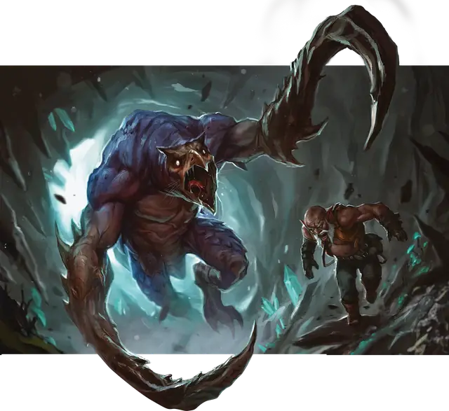

Крюкастый ужас
Hook Horror
Большое Чудовище, Нейтральное

Класс Защиты 15 Инициатива +0 (10)
Хиты 75 (10к10 + 20)
Скорость 30 футов, Лазания 30 футов
| мод | спас | ||
|---|---|---|---|
| СИЛ | 18 | +4 | +4 |
| ЛОВ | 10 | +0 | +0 |
| ТЕЛ | 15 | +2 | +4 |
| мод | спас | ||
|---|---|---|---|
| ИНТ | 6 | −2 | −2 |
| МДР | 12 | +1 | +1 |
| ХАР | 7 | −2 | −2 |
Чувства Тёмное зрение 120 футов, пассивное Восприятие 15, Слепое зрение 60 футов
Языки Язык Крюкастых ужасов
Опасность 3 (700 опыта; БВ +2)
Действия
Мультиатака. Крюкастый ужас совершает две атаки Крюком.
Крюк. Бросок рукопашной атаки: +6, досягаемость 10 фт. Попадание: 11 (2к6 + 4) Колющего урона. Если цель — существо Большого размера или меньше, крюкастый ужас перемещает цель к себе или от себя по прямой на 5 футов.
Бонус мастерства +2
Среда обитания Подземье
Сокровища Отсутствуют
Крюкастый ужас
Охотник за звуками из Подземья
Крюкастые ужасы — хищники с клювом и похожими на крюки передними лапами. Эти существа обитают в лабиринтах пещер Подземья среди глубоких ущелий и сталактитовых лесов, висящих над непроглядной тьмой. Там они стремительно носятся по гротам и ловко раскачиваются под потолками.
Крюкастые ужасы не особо разборчивы в пище: они поедают растения, грибы и любых существ, оказавшихся в пределе досягаемости их крюков.
Они ориентируются в пространстве с помощью эхолокации, производя разнообразный шум: от ударов по скалам и собственному телу до странных звуков, похожих на клёкот, вопли или щелчки. Значение этих звуков известно лишь сами чудовищам, но, к сожалению, многие существа, путешествующие по Подземью или живущие вблизи глубоких пещер, становились жертвами голодных крюкастых ужасов, отправившись на поиски источника подобного шума.